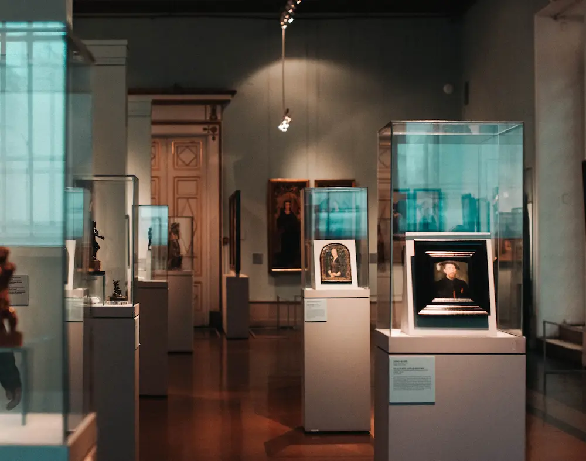

Hvem er jeg?
Lise Gammeltoft er uddannet som indretningsarkitekt fra Finn Juhl´. Lise har arbejdet med Skibsaptering på tegnestue i Stockholm ; har fungeret som indretningsarkitekt for Illums Bolighus og siden været chef i Magasin du Nord med indkøb af møbler og kunsthåndværk.
Hør Lise fortælle om jOUXli og sig selv
Min historie
Dette arbejde medførte mange udlandsrejser og gav dermed inspiration til det senere arbejde med smykker. Lise har desuden arrangeret mange udstillinger bl.a. udstilling i Kunstindustrimuseet i København (nuværende Designmuseet) omhandlende Amerikansk formgivning. I 1987 valgte Lise at udnytte sine formgivningsevner inden for smykkekunstenog startede sit firma jOUXli (navnet er en sammensætning af jOU fra Bijoux og Lise) Hendes unikasmykker kombinerer antikke tiders mysterier med den skandinaviske stil-og formgivning. Inspiration hentes i billedkunst, tekstiler, arkitektur og i modeverden. Specielt er der stor inspiration at hente i Mayakulturen og i den Afrikanske kultur, såvel som Kina og Japan , Ægypten og Pre colombia.

Med respekt for tingenes sjæl og historie skaber Lise et link til nutiden ved at kombinere dem med moderne, bæredygtige og nutidige elementer. Lises stil henvender sig til et tænkende og bevidst publikum, der værdsætter den alternative form, udformning og udstråling af enkelhed og det samspil , der opstår, når den respektive kvinde eller mand bærer smykkerne. Lise har deltaget i mange udstillinger bl.a. på Schæffergården i Gentofte, Haveselskabet på Frederiksberg, samt i Gallerier i København, Paris og Stockholm. Ligeledes har man kunnet købe smykkerne på Louisiana og på Kunstindustrimuseet. Nu forhandles alle smykker fra Lises hjem i Charlottenlund .